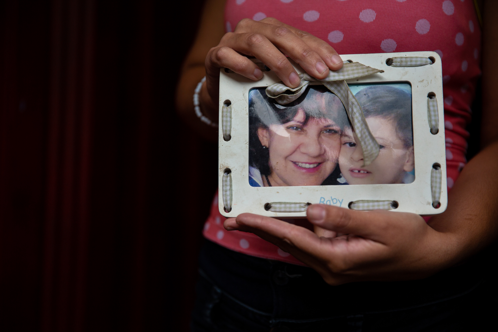
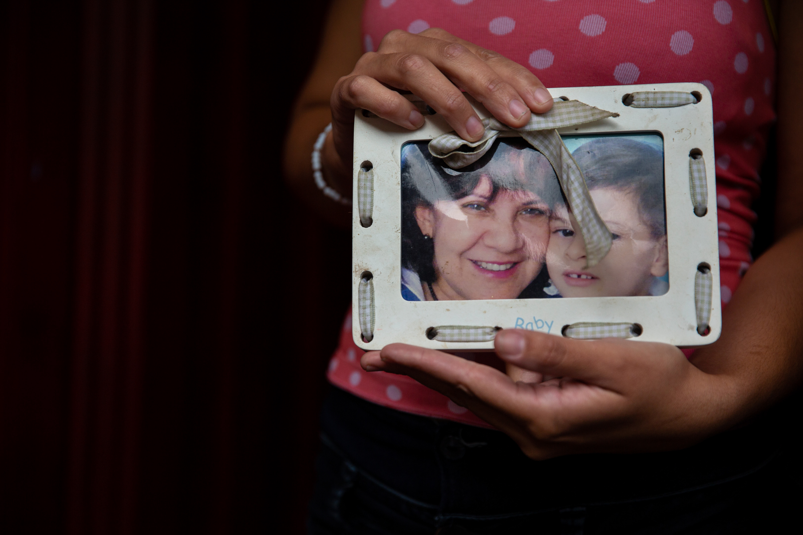

As resources dwindle, violence erupts, and corruption becomes rampant, Venezuelans cope with the reality of leaving their home. They are forced to leave nearly everything behind in search of a safer life. However, some items are held near and dear as families and individuals escape the turmoil that has overridden their country. Venezuelans hold these items close to their heart while they hope for the day that their country will return to peace.

Kiara Antonella Fariñas Rodriguez migrated with her family from _______, Venezuela to Medellín (however long ago)___. Her family had no choice but to leave their home in Venezuela as the country fell deeper into the humanitarian crisis. Here Kiara lives with eight people, including her mother and father. The stuffed bunny she holds in her hands is her most treasured item she brought with her on this journey because _______
Deylena Barboza and Jonathan Freites migrated with their children from _______, Venezuela to Medellín (however long ago). Here, Jonathan works as a fitness trainer and Deylena is a university student, though in Venezuela she was able to practice law. Their most treasured item they brought with them on this journey is the blanket they have in their hands because ____________. They feel extremely grateful to have made good lives for themselves in Medellín, but never wished to leave their home in Venezuela.cle
This one is number three, caption will come soon
 

Andrea Blanco Rondon sits on her bed with her children Lillian, Elisa and Andres. Andrea’s family migrated to Medellín, Colombia from ________, Venezuela when they were unable to buy basic necessities for their children. They live in a neighborhood called Santo Domingo, a cable car’s ride away from the center of Medellín. Though they never intended to leave their home in Venezuela, the family feels grateful to be together and healthy in Colombia. Andrea brought this item because ___________
Venezuelans have been traveling across the country to find a better place to live. Over three million Venezuelans have left the country, with many of them staying in neighboring country Colombia. Colombia has taken in over one million Venezuelans, and it is projected by 2021 that nearly 4 million Venezuelans could be living in Colombia. While the financial strain on Colombia has been felt, the government has left the borders fairly open, and Colombians have welcomed their Venezuelan brothers and sisters into the country.

This is jeedri-diptych
This is blanket diptych one


This is the chef one; he’s a musician now.

This is the one of Elizabeth.
Photo Scrollytelly 1
Here is a little information about this graphic
Living Day to Day
Trying to survive isn't a matter of comfort when it comes to putting a roof over your head at night. Veneuzlenas crossing into Colombia have found the country inviting, but making ends meet every day could determine whether you sleep in a bed or in the streets.
THIS IS THE HEADER FOR THE INFO
DUMMY TEXT GOES HERE BABY
THIS IS THE HEADER FOR THE SECOND ONE
DUMMY TEXT GOES HERE
THIS IS THE HEADER FOR THE THIRD ONE
DUMMY TEXT GOES HERE